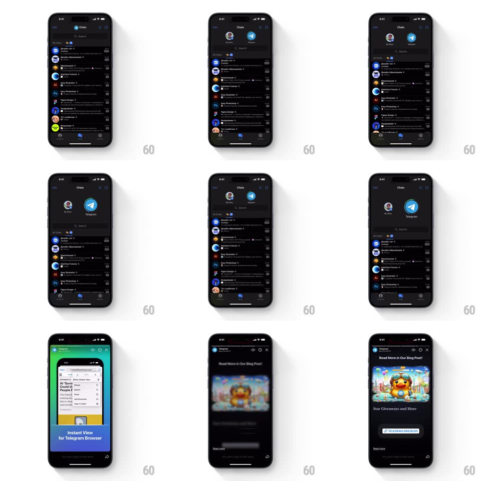

Media
Frame-by-frame

Rebuild this interaction 1:1: Telegram's elastic pull-down on the chat list - pulling down stretches the list and reveals a hidden stories row ("My Story" + contacts) whose circles grow with pull distance, then releasing past the threshold opens the story viewer.

Rebuild this interaction 1:1: Telegram's elastic pull-down on the chat list - pulling down stretches the list and reveals a hidden stories row ("My Story" + contacts) whose circles grow with pull distance, then releasing past the threshold opens the story viewer.
## Integration
Integration: stack-agnostic spec - springs given as stiffness/damping, timed motions as duration + curve; map every value to your framework and animation library of choice.
## Scene
Dark chat list (Chats header, search, chat rows). Hidden above: a stories row with circular avatar rings ("My Story" with a + badge, Telegram's own story). Story viewer: full-screen media with progress ticks, reply field, close.
## Motion spec
Pattern: elastic pull-to-reveal stories.
- Pull down at rest: the chat list translates down 1:1 with rubber-band resistance (distance = 0.55x finger past 80px), revealing the stories row behind.
- Story circles scale with pull depth: 0.4 -> 1.0 across the first 120px of pull, each with a slight stagger (~30ms, left to right), and fade from 0.
- A "Pull down for stories" hint arrow appears mid-pull (fade 150ms) and rotates 180deg once past the open threshold (~140px).
- Release below threshold: everything springs back (spring ~280/24, ~350ms), circles shrinking as they leave.
- Release past threshold: the row snaps fully open (spring ~300/22), then the first story expands from its circle into the full-screen viewer (shared-element zoom, ~400ms) with progress ticks staggering in at the top.
- Close: the viewer zooms back into its circle (350ms) and the row collapses (300ms).
## Calibration
- Rubber-band resistance must be non-linear - past 140px it should feel like taffy.
- The shared-element zoom originates from the exact story circle tapped/thresholded, not screen center.
## Reduced motion
Pull reveals the row without elasticity; story opens with a fade.
## Don't miss
- "My Story" circle carries a + badge; contact circles carry gradient unread rings.
- The chat list stays visible under the reveal - it slides, it doesn't dim.